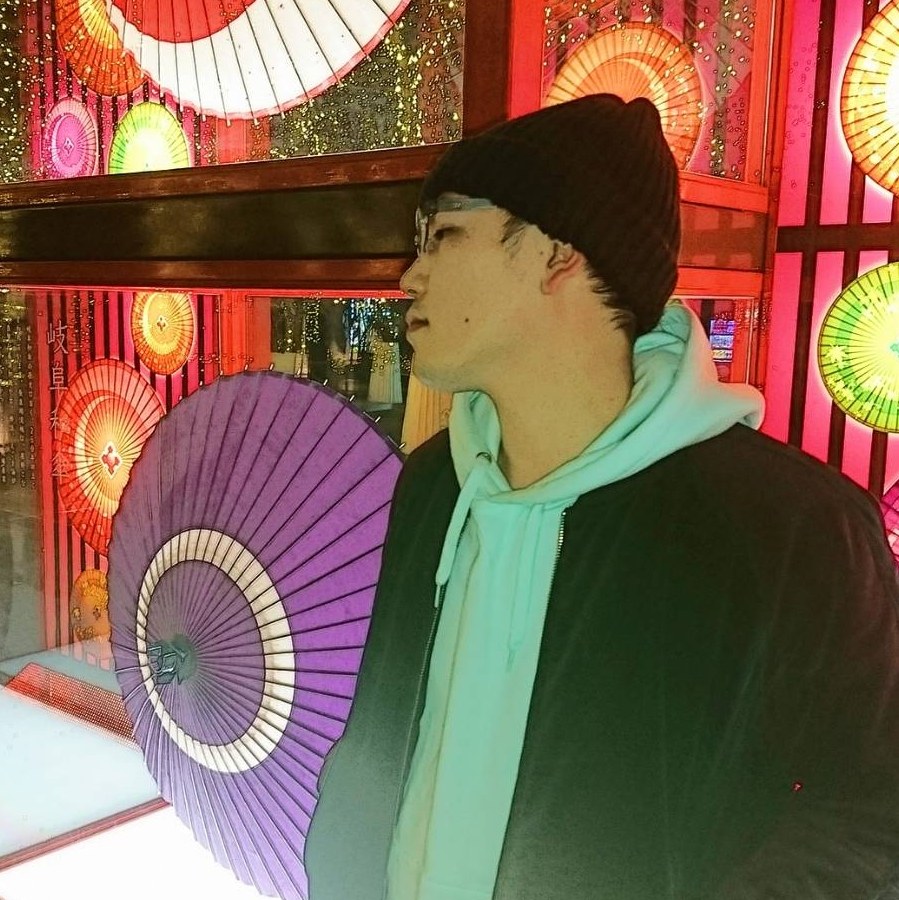

01 / UPCOMING
NEXT GIG.
次回の出演情報
202611/15SUNDAY
02 / ABOUT
PROFILE.
DJ / Organizer

とてTOTE — DJ / Organizer
「音ゲー曲をクラブで聴きたい」という想いから、2010年7月に音楽ゲーム系クラブイベント「beat connection」（後のBECONE）を立ち上げ、同時にDJ活動を開始。
音楽ゲームを軸に、ジャンルや機種を横断した選曲を得意とする。これまでに「夏の宴」「冬の宴」「9BUTTON PARTY」「FULLGAUGE」「遊音BEAT!!」などに出演。2021年には新木場ageHaのARENAフロアでプレイ。
2015年から2023年まで「Vocaloid High」のレギュラーDJとしても活動。自身が主催したBECONEは、15周年を迎えた2025年に活動を終了した。
X / @tote_becone03 / THE STORY
BECONE.
2010 — 2025
BEAT CONNECTION → BECONE音ゲー曲を、
音ゲー曲を、
クラブのフロアで。
2010年7月に始まった「beat connection」は、のちに「BECONE」へ。さまざまな音楽ゲームの楽曲と、その音楽を愛する人が集まる場所として15年間活動し、2025年8月のFinalをもって活動を終了しました。
NOTE / BECONEが終了した今の心境04 / HISTORY
GIG ARCHIVE.
2010年からの出演履歴
2010 — 2026
244GIGS
RECORDED
出演したイベントの記録。年別・キーワードで探せます。
※記録に基づく掲載です。公演情報は各主催者の案内もご確認ください。
出演履歴を読み込んでいます…
05 / CONNECT
CONTACT.
出演・お問い合わせ
出演などのお問い合わせはこちらから
現在の連絡先はX（@tote_becone）です。